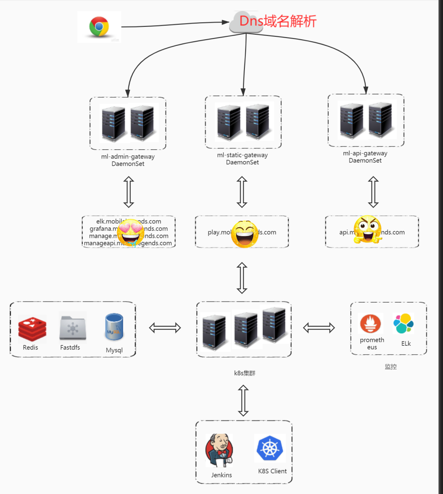

k8s官网介绍
一、网站均衡负载入口策略
架构图

架构图说明
k8s对外暴露使用ingress-nginx-controoler网关的方式对外暴露服务。
用户登录域名，通过阿里云 DNS服务器解析，一般A记录解析 k8s集群上的ingress-nginx-controller网关所在的k8s节点的外网ip，k8s 集群内的ingress-nginx-controller以daemonset的方式运行在集群节点上，listen 80和443端口；CNAME记录则解析到对应的CDN服务。
ingress-nginx 部署方式如下：
[root@master01 ingress]# kubectl get daemonset -ningress-nginx
NAME DESIRED CURRENT READY UP-TO-DATE AVAILABLE
admin-ingress-nginx-controller 3 3 3 3 3
ml-api-ingress-nginx-controller 5 5 5 5 5
ml-static-ingress-nginx-controller 3 3 3 3 3
zgame-ingress-nginx-controller 2 2 2 2 2
## admin-ingress-nginx-controller 管理员网关（用作日志，监控的服务注册）
## ml-api-ingress-nginx-controller ml服务的api网关
## ml-static-ingress-nginx-controller ml服务的静态网关
## zgame-ingress-nginx-controller zame服务网关
当通过A记录解析，把流量分发到k8s对应的ingress-controller网关之后，网关会解析域名，分发到对应的ingress资源上去，然后ingress将流量分发到对应的service上去，service通过k8s原生的endpoint资源将流量转发到真实的pod服务上去。
举个栗子： 当请求访问 ”api.XXXXXX.com“时候，首先经过阿里云DNS服务解析（阿里云A记录如图），假如A记录解析的IP为：“X.x.x.202”,这个时候流量就会导入到外网地址为"X.x.x.202"这台k8s节点上.与此同时ingress-nginx-controller是以damoneset的方式运行，通过采用hostnetwork的方式共享宿主机网络命名空间，所以这个时候listen的80的端口正是admin-ingress-nginx-controller控制器产生的pod为"ml-api-ingress-nginx-controller-7tscl"的ingress-controller pod服务，这个时候流量就会导入到这个pod服务内。这个ingress-controller pod会根据上面注册的ingress，将流量通过service代理导入到提供服务的pod。从而实现一次流量转发.如下图：

Tips: 这里的入口流量的均衡负载方式，是采用DNS均衡负载方式，流量直接导入到k8s集群对应的公网节点上。因此如果有k8s节点下线，需要注意清理阿里云的A记录
-
ingress-controoler资源常用操作命令
#1. 查看ingress-controller 网关 kubectl get pods -ningress-nginx #2. 查看ingress资源 ##目前常用项目资源分别分布在 mlweb,mgameweb,zgameweb,elastic-system等命令空间下 kubectl get ingress -nmlweb kubectl get ingress -nzgameweb
1.1网络策略
-
目前只针对 monitoring 空间下的ingress做了白名单，具体可通过如下命令查看对应的资源
[root@master01 config]# kubectl get ingress access-grafana -nmonitoring -oyaml --- *** nginx.ingress.kubernetes.io/whitelist-source-range: 180.169.85.114/32,137.59.103.18/32,103.206.188.183/32,101.230.210.194/32,161.202.217.208/32,161.202.217.167/32 ---
二、Jenkins CI/CD发布流程
Jenkins 实现 kubernetes的官网版本发布流程。

jenkins官网应用发布更新流程详情
1.拉取svn代码
-
官网版本管理 是通过
第一种：“版本类型tags+“版本release”+“project”+“站点site”+“location”
第二种: “版本类型truck”+“project”+“站点site”+“location” 这两种方式来管理对应的分支代码。
第一种可以认为是迭代版本;第二种认为是新分支,及不存在release版本号。因此拉取代码的时候，要明确知道
tags+release+project+site+localtion。举个栗子：
jenkins 名为 “k8s-ml-dev-api.xxxx.com job"的job 执行自动发布流程，需要输入对应的参数。
jenkins用户输入：

然后jenkins执行如下脚本，进行版本发布：
## 执行shell
array=(${release//\// })
release=${array[0]}
type=`echo ${type}|sed 's/-//'`
bash -x /usr/local/src/k8s-dev-deploy.sh "api.xxxxxxxxxx.com" "$location" "$release" true "$type" "${BUILD_NUMBER}" "${branch}
2.编译代码，并打包docker镜像
2.1 编译前准备
代码编译分为**：静态服务和非静态服务**
-
1。如果静态服务编译，需要在本地安装对应的静态依赖包
if [ "${dynamic}" == "false" ];then if [ -f "webpack.config.js" ] || [ -f "vue.config.js" ] || [ -f "package.json" ];then [ -d "dist" ] && rm -rf dist [ -d "node_modules" ] && rm -rf node_modules grep node-sass package.json >/dev/null [ $? -eq 0 ] && /usr/local/node/bin/npm install node-sass --unsafe-perm /usr/local/node/bin/npm install [ $? -ne 0 ] && exit 1 /usr/local/node/bin/npm run ${project_env} [ $? -ne 0 ] && exit 1 fi fi -
2.非静态地址则需要，替换MFW地址和DB地址
cd ${SOURCE_DIR}/${project}/${site}${location} sed -i "s#\(MFW_LOCATOR=\).*#\1\"$MFW_LOCATOR_ADDR\"#g" ${project_env_file} sed -i "s#\(DB_HOST=\).*#\1${DB_HOST_ADDR}#g" ${project_env_file} sed -i "s#\(DB_HOST_MLWEB=\).*#\1${DB_HOST_ADDR}#g" ${project_env_file} sed -i "s#\(DB_HOST_HERO=\).*#\1${DB_HOST_ADDR}#g" ${project_env_file} sed -i "s#\(DB_HOST_PLAYERCARE=\).*#\1${DB_HOST_ADDR}#g" ${project_env_file} sed -i "s#\(DB_HOST_ML_WEB=\).*#\1${DB_HOST_ADDR}#g" ${project_env_file} ls .[!.]* [ $? -eq 0 ] && tar -zcf ${app_name}-${release}.tar.gz * .[!.]* || tar -zcf ${app_name}-${release}.tar.gz * rm -rf $DOCKER_IMGAE_FACTORY/SOURCES/${app_name}-${release}.tar.gz mv ${app_name}-${release}.tar.gz $DOCKER_IMGAE_FACTORY/SOURCES/
2.2 正式编译打包
- 将编译文件目录拷贝到本地docker编译目录，根据不同类型生成dockerfile文件，编程生成docker镜像，上传到docker仓库服务
3.生成k8s资源清单,并apply创建资源
3.1 跟调度有关
-
应用pod通过deployment 控制器进行管理，通过标签选择器nodeSelector选择调度
## ml项目常见选择器 nodeSelector: kubernetes.io/project: ml kubernetes.io/node-role: gateway kubernetes.io/gateway: api nodeSelector: kubernetes.io/project: ml kubernetes.io/node-role: gateway kubernetes.io/gateway: static
3.2 跟存储有关
- 应用pod的只针对了 应用日志和nginx日志做持久化,业务本身是无状态的。
4.修改site对应的ingress资源.
一般操作如下
paths=`kubectl --kubeconfig=${KUBE_CONFIG} --insecure-skip-tls-verify -n ${NAMESAPCES} get ingress ${domain} -o jsonpath='{.spec.rules[0].http.paths..path}'`
if [ $? -eq 0 ];then
location_path="$location(/|$)(.*)"
[ "$location" == "/" ] && location_path="/"
if [ "$paths" == "" ];then
patch="[{\"op\": \"add\", \"path\": \"/spec/rules/0/http\", \"value\":{\"paths\":[{\"path\":\"${location_path}\",\"backend\":{\"serviceName\":\"${app_name,,}\",\"servicePort\":80}}]}}]"
kubectl --kubeconfig=${KUBE_CONFIG} --insecure-skip-tls-verify -n ${NAMESAPCES} patch ingress ${domain} --type json -p "$patch"
else
echo "$paths" |grep -w "$location" >/dev/null
if [ $? -ne 0 ];then
patch="[{\"op\": \"add\", \"path\": \"/spec/rules/0/http/paths/-\", \"value\":{\"path\":\"${location_path}\",\"backend\":{\"serviceName\":\"${app_name,,}\",\"servicePort\":80}}}]"
kubectl --kubeconfig=${KUBE_CONFIG} --insecure-skip-tls-verify -n ${NAMESAPCES} patch ingress ${domain} --type json -p "$patch"
fi
fi
fi